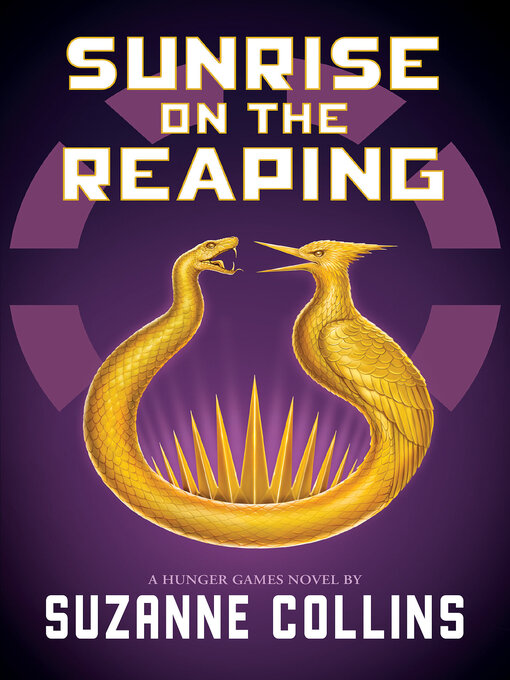

ตัวละครสำคัญ


"รุ่งอรุณแห่งวันเก็บเกี่ยว" นิยายดิสโทเปีย จาก ซูซาน คอนลิน เป็นหนังสือเล่มที่ 5 จากนิยายชุด "เกมล่าชีวิต" เล่าย้อนไปในอดีตของ "เฮย์มิช อเบอร์นาธี" ผู้ชนะและผู้ฝึกสอนจากเกมล่าชีวิต เมื่อการแข่งขันครั้งที่ 50 ทุกเขตปกครองต้องส่งบรรณาการเข้าร่วมเกมเพิ่มเป็นสองเท่า เพื่อเป็นเกียรติยศของควอร์เตอร์เควลครั้งที่ 2 "เฮย์มิตช์" เด็กหนุ่มจากเขต 12 ถูกขานชื่อในพิธีเก็บเกี่ยว จึงถูกพรากจากบ้านและครอบครัว ขึ้นรถไฟซึ่งมุ่งไปสู่ความตายในแคปิตอล
หนึ่งในจุดเด่นของ “The Hunger Games: Sunrise on the Reaping” คือการเล่าเรื่องผ่านตัวละครที่ต้องเผชิญกับโลกที่เต็มไปด้วยความอยุติธรรมและการควบคุมของรัฐบาล ผู้อ่านจะได้ติดตามเรื่องราวของ Haymitch Abernathy ในช่วงเวลาที่เขาถูกเลือกให้เข้าร่วมการแข่งขัน Hunger Games ครั้งที่ 50 ซึ่งเป็นการแข่งขันพิเศษที่มีผู้เข้าแข่งขันมากกว่าปกติ
เรื่องราวไม่ได้มุ่งเน้นเพียงการแข่งขันเพื่อเอาชีวิตรอดเท่านั้น แต่ยังสะท้อนให้เห็นถึงการใช้อำนาจ การโฆษณาชวนเชื่อ และการควบคุมประชาชนของ Capitol ทำให้ผู้อ่านได้เห็นว่าผู้คนใน Panem ต้องใช้ชีวิตอยู่ภายใต้ระบบที่ไม่เป็นธรรมอย่างไร และตัวละครต้องตัดสินใจอย่างไรเมื่อต้องเผชิญกับสถานการณ์ที่ยากลำบาก
เรื่องราวไม่ได้มุ่งเน้นเพียงการแข่งขันเพื่อเอาชีวิตรอดเท่านั้น แต่ยังสะท้อนให้เห็นถึงการใช้อำนาจ การโฆษณาชวนเชื่อ และการควบคุมประชาชนของ Capitol ทำให้ผู้อ่านได้เห็นว่าผู้คนใน Panem ต้องใช้ชีวิตอยู่ภายใต้ระบบที่ไม่เป็นธรรมอย่างไร และตัวละครต้องตัดสินใจอย่างไรเมื่อต้องเผชิญกับสถานการณ์ที่ยากลำบาก
เรียนรู้เรื่องราวในอดีตของ Haymitch และเหตุการณ์สำคัญ ที่ส่งผลต่อบุคลิกและมุมมองของเขาในเวลาต่อมา
หนังสือแสดงถึง Capitol ที่ใช้อำนาจและสื่อเพื่อควบคุมผู้คน รวมถึงสร้างภาพของ Hunger Games ให้กลายเป็นสิ่งที่ประชาชน ต้องรับชมและยอมรับ
ตัวละครต้องเผชิญกับสถานการณ์ที่กดดันและต้องเลือกว่าจะทำอย่างไร เมื่อทางเลือกแต่ละทางอาจส่งผลต่อชีวิตของตนเองและคนรอบข้าง
นอกจากความสนุกของเรื่องราวแล้ว หนังสือยังทำให้ผู้อ่านตั้งคำถาม เกี่ยวกับความเหลื่อมล้ำ อำนาจ การโฆษณาชวนเชื่อ และเสรีภาพของผู้คน
การอ่านเรื่องนี้จึงไม่ได้ให้เพียงความสนุกจากโลกของ Panem แต่ยังช่วยให้ผู้อ่านมองเห็นว่า เมื่ออยู่ภายใต้ระบบที่ไม่เป็นธรรม การตัดสินใจและการยืนหยัดเพื่อสิ่งที่เชื่ออาจมีความหมายมากกว่าที่คิด
The Hunger Games: Sunrise on the Reaping” ไม่ได้เป็นเพียงเรื่องราวของการแข่งขัน Hunger Games แต่ยังเป็นเรื่องราวเกี่ยวกับมนุษย์ที่ต้องต่อสู้กับอำนาจ ความอยุติธรรม และสถานการณ์ที่เกินกว่าการควบคุมของตนเอง หนังสือช่วยให้ผู้อ่านเข้าใจตัวละคร Haymitch มากขึ้น พร้อมทั้งได้เรียนรู้เกี่ยวกับความกล้าหาญ มิตรภาพ การเสียสละ และความสำคัญของการตั้งคำถามต่อสิ่งที่สังคมยอมรับ
มีขึ้นเพื่อกระชับความสัมพันธ์กับเพื่อนใหม่ที่กำลังจะเข้ามาเรียนในคณะ หรือสาขาวิชาเอก-โทนี้ด้วยกัน แต่ไม่มีการบังคับให้เข้าร่วมกิจกรรมนี้นะครับ ดังนั้นไม่ต้องเข้าก็ได้ เพราะไม่มีผลอะไรกับการใช้ชีวิตในสาขาวิชานี้แน่นอน